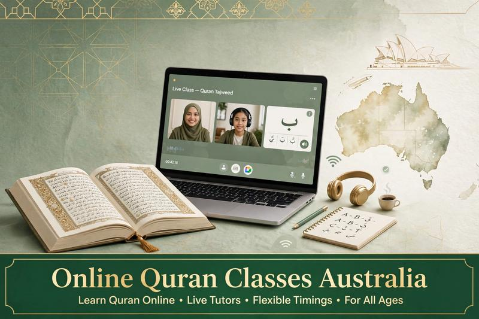

Online Quran Classes in Australia

Finding a suitable Quran teacher in Australia can be difficult for families with busy school, work and family schedules. Online Quran classes provide a convenient way for children and adults to study the Quran from home with a private teacher.
Al Shimaa Quran Academy offers one-to-one online Quran lessons for students in Australia who want to improve Quran reading, learn Tajweed, memorize the Quran or study Arabic and Islamic Studies.
🇦🇺 Learn Quran Online from Australia
Choose a flexible lesson schedule and start with a free trial before beginning regular Quran classes.
Book a Free Trial →Why Choose Online Quran Classes in Australia?
Online Quran classes allow students to learn without travelling to a local classroom. This can be useful for families living in different Australian cities or areas where suitable Quran teachers are not available nearby.
Students can attend lessons from home using a computer, tablet or compatible device while communicating with their teacher through an online classroom.
One-to-One Quran Classes for Students in Australia
Private one-to-one lessons give the teacher the opportunity to focus on one student's reading, pronunciation and learning goals during the lesson.
A student who is learning the Quran for the first time may need a different lesson structure from a student who already reads fluently and wants to improve Tajweed or memorize additional Surahs.
For more information about private lessons, read: One-to-One Online Quran Classes .
Quran Classes for Kids in Australia
Children can learn Quran online from home while following a schedule that works around school and family activities. Lessons can begin with basic Arabic letters and Quran reading before progressing to Tajweed and memorization.
A private teacher can adjust the lesson pace according to the child's age and current level.
Parents looking for children's programs can also read: Online Quran Classes for Kids .
Quran Classes for Adults in Australia
Adults can also learn Quran online regardless of their current reading level. Some students begin with the Arabic alphabet and basic reading, while others want to improve Tajweed or develop a regular Quran memorization routine.
Private lessons make it possible to build a study plan around work and other responsibilities.
Read our guide: Online Quran Classes for Adults .
Quran Reading and Tajweed Classes
Students who already know how to read Arabic can focus on improving Quran pronunciation and Tajweed. Lessons can include practical recitation and correction of common pronunciation mistakes.
Tajweed topics may include rules related to Noon Sakinah and Tanween, Meem Sakinah, Ghunnah, Qalqala, Madd and other pronunciation rules.
Explore our detailed Tajweed guides:
- Noon Sakinah & Tanween Rules
- Meem Sakinah Rules in Tajweed
- Rules of Ra: Tafkhim and Tarqiq
- What Is Ghunnah in Tajweed?
Quran Memorization Classes in Australia
Students who want to memorize the Quran can follow a structured Hifz program online. The teacher can listen to new memorization, correct mistakes and help the student review previously memorized passages.
The amount of memorization can be adjusted according to the student's age, available time and personal goals.
Arabic and Islamic Studies Online
Online learning can also be used for subjects related to Quran study. Students may choose Arabic language lessons or Islamic Studies alongside their Quran program.
Studying these subjects online can help families organize several learning activities within one flexible schedule.
Flexible Quran Lesson Times for Australian Students
Australia has several time zones, so lesson availability should be checked according to the student's location. A suitable schedule can help students attend lessons consistently without interfering with school, work or family responsibilities.
When choosing a lesson time, consider the student's local Australian time as well as the teacher's available schedule.
Online Quran Classes for Families
Families may have more than one student who wants to learn Quran. Children can have different reading levels and learning goals, so individual lessons can allow each student to follow an appropriate program.
Families can also review the available pricing and lesson plans before choosing a regular schedule.
How Do Online Quran Classes Work?
- Register for a free trial.
- Discuss the student's Quran level and learning goals.
- Choose an available lesson schedule.
- Attend the online lesson from home.
- Practice between lessons and continue with the planned program.
What Do You Need for Online Quran Classes?
Students generally need a stable internet connection, a suitable device and a quiet place for the lesson. A microphone and camera can also help the teacher communicate with the student and observe the lesson clearly.
For children, parents may want to stay nearby during the first lessons to help with the technology and establish a regular learning routine.
How Much Do Online Quran Classes Cost?
The cost of online Quran lessons depends on the lesson plan, number of classes and other selected options. Al Shimaa Quran Academy offers plans starting from $20 per month.
You can view the current available plans on our Quran classes pricing page before choosing a regular schedule.
Female Quran Teachers for Sisters and Girls
Some sisters and families prefer a female Quran teacher for private Quran lessons. Students can study Quran reading, Tajweed, memorization and other subjects through individual online lessons.
Learn more about female Quran teachers here: Female Quran Teacher Online for Sisters & Kids .
Quran Classes for Beginners in Australia
Students do not need to be advanced Quran readers to begin online lessons. Beginners can start with the Arabic alphabet, basic reading skills and Noorani Qaida before moving to longer Quran passages.
A private teacher can adjust the pace as the student's reading improves.
For a beginner-friendly guide, visit: Quran Classes for Beginners .
Start Learning Quran Online in Australia
If you are looking for private Quran lessons in Australia, you can start with a free trial at Al Shimaa Quran Academy. The trial provides an opportunity to discuss the student's level, learning goals and preferred schedule.
🇦🇺 Learn Quran Online from Australia
Private Quran lessons for kids and adults with flexible online scheduling.
Book Your Free Trial →